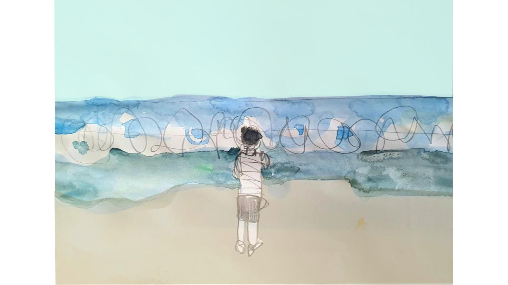
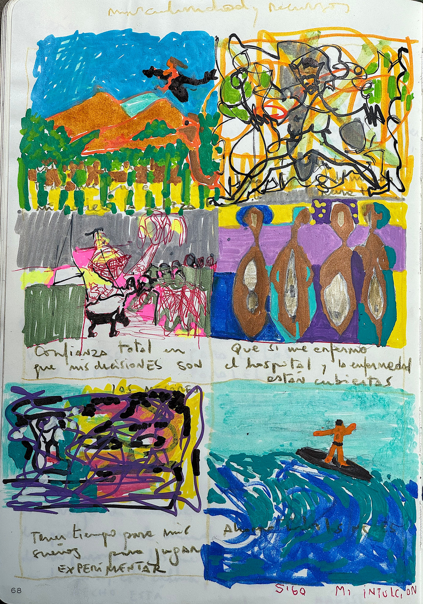
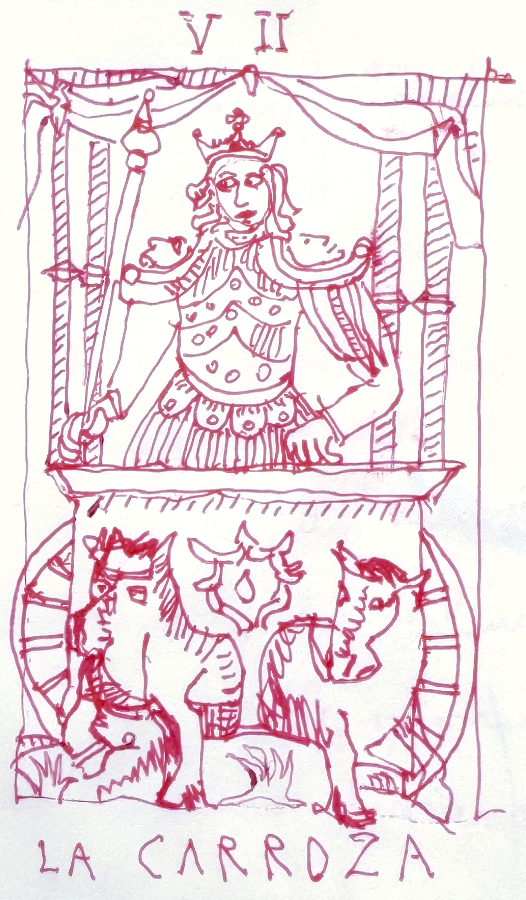
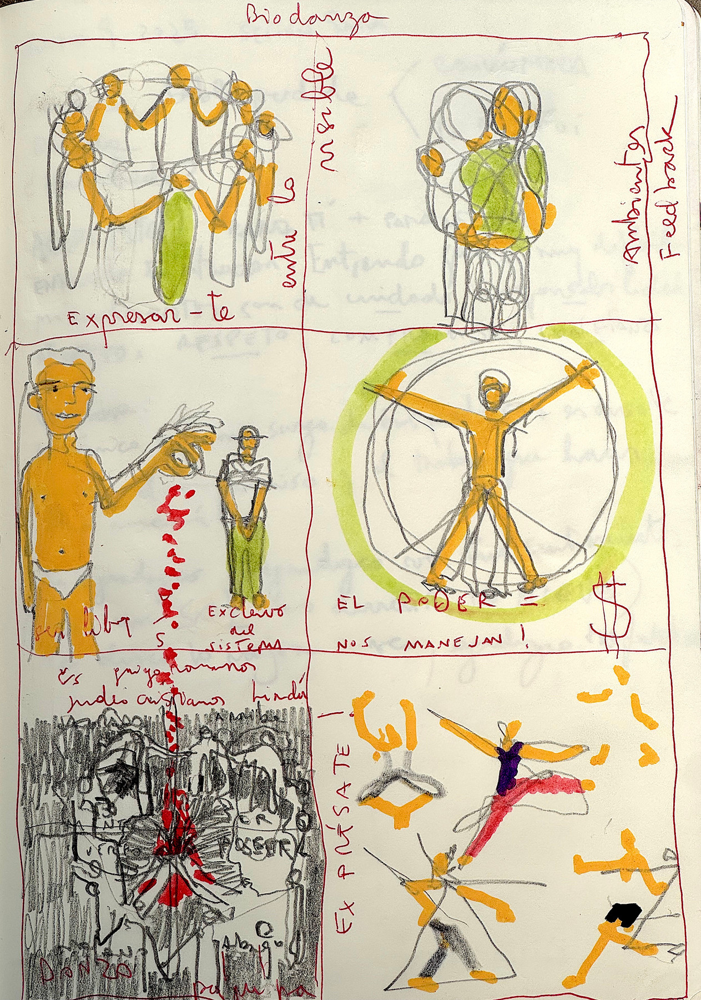

OBRAS / ILUSTRACIÓN
Ilustración
Ilustrar, para mí, no es acompañar un texto, sino iluminar un proceso humano: poner en imágenes y colores una energía, un propósito, un sentido.
Hago mapas de procesos —de transformación, de tránsito, de conciencia—.
El trazo no explica: revela.
A través del dibujo pienso, me sano, viajo al pasado y al futuro, me reconozco en los arquetipos, encarno procesos de transformación.
Aspiro a lograr un metalenguaje, donde palabra e imagen se peguen y aparezca algo nuevo: una síntesis que resume, pero también abre otra dimensión.
Series y proyectos

RELATO ILUSTRADO: ENCERRADO
14 imágenes

RELATO ILUSTRADO: EL NINO DEL BALCON
11 imágenes

COMIC: TRANSICION DE GONZALO ARTHUR A ARTHUR GONZALEZ
4 imágenes

ENEAGRAMA
25 imágenes

TAROT
25 imágenes

COMIC: VIÑETAS DE DESARROLLO PERSONAL
7 imágenes

DIGITALES
21 imágenes